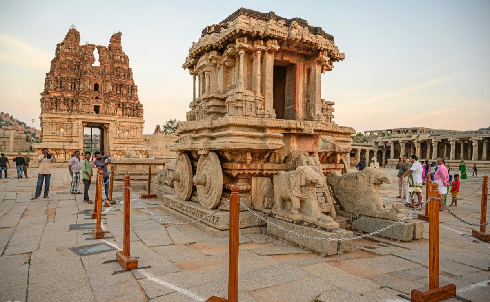

Charminar
Charminar
The Charminar is a Mosque
constructed in 1591, is a monument located in Hyderabad, Telangana, India.
 Fatehpur Sikri
Fatehpur Sikri
It is a town in the Agra District of Uttar Pradesh founded as
capital in Mughal empire.

Hampi
Hampi is a UNESCO
World Heritage Site located in Hampi town,east-central Karnataka.
 TAJ MAHAL
TAJ MAHAL
Taj Mahal is an Islamic ivory-white marble
mausoleum on the right bank of the river Yamuna in Agra.